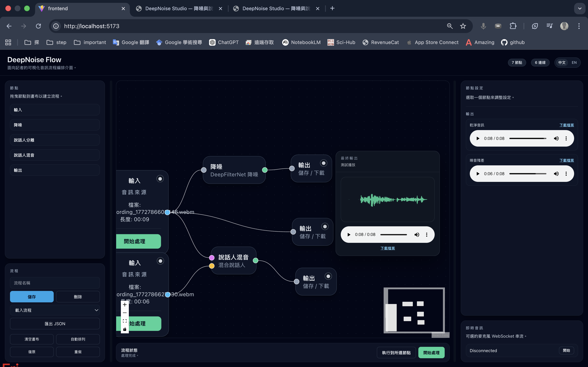
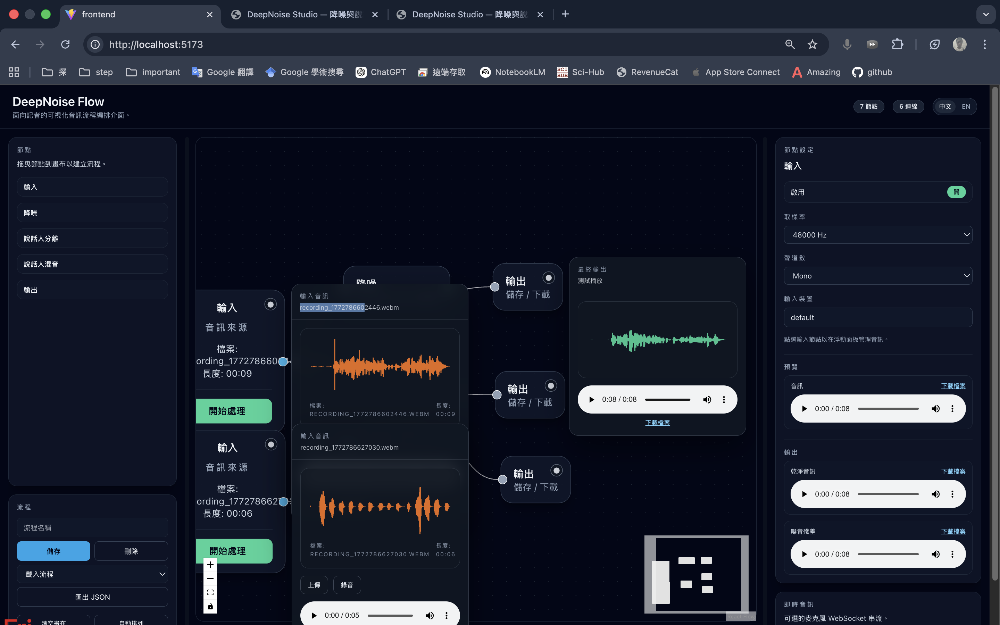

What this tool does
It demonstrates a visual audio pipeline where users can clean noisy speech and inspect each processing step in a node editor.
Personal Engineering Showcase
DeepNoise Flow is a personal demo website for audio denoise workflows. Upload or record audio, run node-based processing, preview waveform and playback, then download output.
A clean public showcase for audio workflow engineering.
It demonstrates a visual audio pipeline where users can clean noisy speech and inspect each processing step in a node editor.
ReactFlow front-end, FastAPI backend, DeepFilterNet denoise, and optional SepFormer speaker separation.
Interaction consistency, quick action panels, advanced inspector controls, and safe backend processing for public traffic.
From source input to downloadable output in a single visual graph.
Upload WAV/MP3/WEBM or record from microphone.
Run DeepFilterNet to suppress background noise.
Inspect waveform and playback processed audio instantly.
Download clean output in your selected format.
The live editor supports upload/recording, waveform preview, playback, and output download.
Waveform preview and replay are available in the floating quick panel.
Advanced format/bitrate settings are in the right inspector.


Designed as a practical personal demo that can be shared publicly.
React + Vite + ReactFlow
Floating quick panels
Resizable inspector layout
Waveform rendering with memoizationFastAPI + Socket.IO
Upload validation + safety limits
Rate limiting + request throttling
Processing timeout + queue controlDeepFilterNet for denoise
Optional SepFormer separation
WAV/MP3/WEBM input validation
Public-safe processing guardsSafeguards are enabled to prevent abuse and overload.
Use these commands to launch core mode or full demo mode.
./run.sh core./run.sh demo